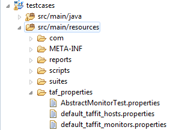
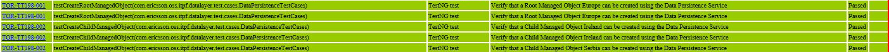

This page consist TAF FAQs, allowing the users to get quick answers to common questions.
Table of Contents:
Null Host Returned
Question: The Following code snippet returns null Host:
final Host host = DataHandler.getHostByType(HostType.RC); if (host == null) { throw new IllegalArgumentException("No host of type " + HostType.RC.toString() + "was found"); } return host; |
|---|
Answer: The reason why this might be happening is that the hosts properties file is not placed at the right location, i.e. taf_properties folder.

It is important to note that, DataHandler will not be able to fetch host information if the properties file is placed in the classpath.
Log Writer Exception
Question: Exceptions related to Log Writer is thrown on each test run:
2013-02-13 08:55:39,610 INFO [main] [se.ericsson.jcat.fw.logging.writers.LogWriterUtils] Extracting Dtree skeleton to: C:/Users/evajkur/tmp/jcat/ 2013-02-13 08:55:39,610 INFO [main] [se.ericsson.jcat.fw.logging.writers.LogWriterUtils] Extracting Dtree skeleton to: C:/Users/evajkur/tmp/jcat/ Warning: Could not create directory ./configmethods ! 2013-02-13 08:55:41,255 INFO [main] [se.ericsson.jcat.fw.ng.logging.LogWriterControl] Added user logWriter: se.ericsson.jcat.fw.ng.logging.writers.DbLogWriterRIPNG 2013-02-13 08:55:41,255 INFO [main] [se.ericsson.jcat.fw.ng.logging.LogWriterControl] Added user logWriter: se.ericsson.jcat.fw.ng.logging.writers.DbLogWriterRIPNG 2013-02-13 08:55:41,265 ERROR [main] [se.ericsson.jcat.fw.ng.logging.LogWriterControl] Exception: java.lang.reflect.InvocationTargetException at sun.reflect.NativeMethodAccessorImpl.invoke0(Native Method) at sun.reflect.NativeMethodAccessorImpl.invoke(NativeMethodAccessorImpl.java:57) at sun.reflect.DelegatingMethodAccessorImpl.invoke(DelegatingMethodAccessorImpl.java:43) at java.lang.reflect.Method.invoke(Method.java:601) at se.ericsson.jcat.fw.ng.logging.LogWriterControl.event(LogWriterControl.java:208) at se.ericsson.jcat.fw.ng.logging.LogWriterControl.executionStart(LogWriterControl.java:313) at se.ericsson.jcat.fw.ng.listeners.JcatSuiteListener.onExecutionStart(JcatSuiteListener.java:639) |
|---|
Answer: TafRun.groovy file is out of date. The latest version of the file will need to be downloaded to the TAF project. This can be fetched by cloning the following repo and copying from location: 'src/main/resources/scripts'
Test Case Report shows that Test Case are being Called Twice
Question: Test Case Report shows that the TCs are being called Twice even though with debugging, it is known that this is not happening.

Answer: The reason why this might be happening is because the listeners have been included in the suites twice causing it to print to the report twice. Also, if the TC method is running with multiple context or vuser values then the TC method will be printed out n number of times based on that.
{kind=link}
{kind=link}